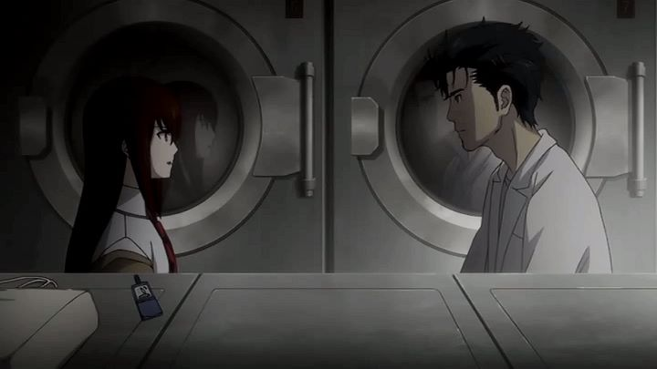

The original anime series "Steins;Gate" is a good show, but a bit overhyped. It's strength isn't in its science fiction, but in the exaggerated emotional journey the characters have to go through. One of the major issues I had with it was the ending: the show has a perfectly happy ending. Nothing lost, seemingly nothing sacrificed. Yes, Okabe goes through Hell to get to that "perfect" ending, but shouldn't using time travel thousands of times over leave at least SOME artifacts?Sure enough, it does. The sequel movie "Steins;Gate: The Movie - Load Region of Deja Vu" takes place not long after the series, and confirms what I wanted to happen. The ending wasn't perfect. There were side effects. Those side effects are entirely on Mad Scientist Okabe Rintaro, he alone knowing that time travel was possible, and he alone having the memories of what exists on other timelines. He's happy where he is now, but he can't forget what happened. He has hallucinations. Powerful headaches. His mind and body are struggling to accept they belong to this timeline. And (about halfway through the movie) in front of Kurisu, he simply disappears into thin air. Not just physically, but from the memories of everyone, even Kurisu, who despite having been talking to him seconds earlier, cannot remember his name."Load Region of Deja Vu" tries to explain the science behind its science fiction, much like the series did. And admittedly, it does a better job, but thinking too hard will still show cracks in the logic. The strength again falls onto the characters, their emotional turmoil and the relationships with each other. Even before anything really happens, we are treated to that when Kurisu returns to Japan to visit the gang. At one point, drunk, Kurisu confronts Okabe about their love, which was said but hadn't gone anywhere by the final episode of the series. This alone is romantic enough for fans invested in the characters to want to see the movie. And when Okabe's existance is in jeopardy? We are given a moment for Okabe himself to understand what is happening, and for him to tell Kurisu straight: "forget me." He had already tried to fix things to save everyone, using time travel to experience their deaths over and over. What exists now is delicate, and most likely, impossible to fix any further. And he can't bare letting Kurisu go through the same pain. Kurisu almost gives in, but ultimately, just can't give up on saving Okabe. It isn't just friendship. It's love, pure as day.That writing is as strong as ever, from a romantic-drama perspective. Depending on why you liked "Steins;Gate," you should enjoy the movie. That writing is also well adapted yet again in English. Funimation uses lots of modern young-adult slang to make the characters feel more real and modern (or perhaps, dated, if you watch the movie more than a decade after its release). The English dub is very good, with plenty of emotionally powerful moments between the two leads. The visuals aren't any better than the series though (particularly the barely-par animation), which makes it feel like it doesn't qualify for a theatrical release. The music and sound effects also, while still good, aren't as powerful they were in the series. And Kurisu does get subjected to a couple brief "fanservice" visuals; the movie isn't particularly sexy, but certain fans will either appreciate those cuts or be annoyed.  Even from the opening minutes, the direction and writing makes the movie feel like a triumphant return for fans, like the film sequels to "Eden of the East." If you were happy with the original ending of the series, there isn't much reason to see this alternate epilogue. But if you are even the slightest bit curious, I consider "Load Region of Deja Vu" essential after seeing the show. It's more like a feature-length OVA than a proper movie, but it's important to make the story feel complete. It's not the "good ending," but the "true ending."
- "Ani" More reviews can be found at : https://2danicritic.github.io/ Previous review: review_Steins;Gate Next review: review_Street_Fighter_II_-_The_Animated_Movie